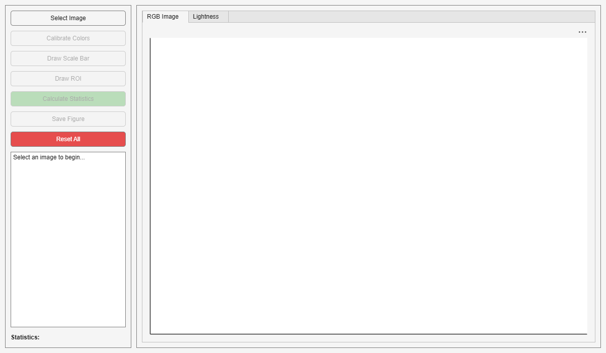

classdef FieldImageColorCalibrationApp < matlab.apps.AppBase % Properties that correspond to app components properties (Access = public) UIFigure matlab.ui.Figure GridLayout matlab.ui.container.GridLayout LeftPanel matlab.ui.container.Panel SelectImageButton matlab.ui.control.Button CalibrateButton matlab.ui.control.Button DrawROIButton matlab.ui.control.Button DrawScaleButton matlab.ui.control.Button CalculateStatisticsButton matlab.ui.control.Button SaveFigureButton matlab.ui.control.Button ResetButton matlab.ui.control.Button StatisticsTextArea matlab.ui.control.TextArea StatisticsLabel matlab.ui.control.Label RightPanel matlab.ui.container.Panel TabGroup matlab.ui.container.TabGroup RGBTab matlab.ui.container.Tab RGBAxes matlab.ui.control.UIAxes LightnessTab matlab.ui.container.Tab LightnessAxes matlab.ui.control.UIAxes end properties (Access = private) dngFilePath % Path to selected DNG file img_color_corrected % Calibrated RGB image lightnessImg % Lightness image roiPolygon % ROI polygon object scaleLine % Scale line object mask % ROI mask roiData % ROI statistics scaleInfo % Scale calibration information roiDrawn % Flag for ROI completion scaleDrawn % Flag for scale completion end % Callbacks that handle component events methods (Access = private) % Code that executes after component creation function startupFcn(app) % Disable buttons until image is loaded app.CalibrateButton.Enable = 'off'; app.DrawROIButton.Enable = 'off'; app.DrawScaleButton.Enable = 'off'; app.CalculateStatisticsButton.Enable = 'off'; app.SaveFigureButton.Enable = 'off'; % Initialize flags app.roiDrawn = false; app.scaleDrawn = false; end % Button pushed function: SelectImageButton function SelectImageButtonPushed(app, event) [file, path] = uigetfile({'*.dng;*.cr2;*.CR2', 'RAW Images (*.dng, *.cr2)'}, ... 'Select DNG or CR2 Image'); if isequal(file, 0) return; % User canceled end app.dngFilePath = fullfile(path, file); app.CalibrateButton.Enable = 'on'; app.StatisticsTextArea.Value = sprintf('Image selected: %s', file); end % Button pushed function: CalibrateButton function CalibrateButtonPushed(app, event) try app.StatisticsTextArea.Value = 'Processing image...'; drawnow; % Read and process DNG file rawImage = rawread(app.dngFilePath); rawInfo = rawinfo(app.dngFilePath); colorInfo = rawInfo.ColorInfo; % Black level correction blackLevel = colorInfo.BlackLevel; blackLevel = reshape(blackLevel, [1 1 numel(blackLevel)]); blackLevel = planar2raw(blackLevel); repeatDims = rawInfo.ImageSizeInfo.VisibleImageSize ./ size(blackLevel); blackLevel = repmat(blackLevel, repeatDims); imgCorrected = rawImage - blackLevel; imgCorrected = max(0, imgCorrected); imgCorrected = double(imgCorrected); maxValue = max(imgCorrected(:)); imgCorrected = imgCorrected ./ maxValue; % White balance whiteBalance = colorInfo.CameraAsTakenWhiteBalance; gLoc = strfind(rawInfo.CFALayout, "G"); gLoc = gLoc(1); whiteBalance = whiteBalance / whiteBalance(gLoc); whiteBalance = reshape(whiteBalance, [1 1 numel(whiteBalance)]); whiteBalance = planar2raw(whiteBalance); whiteBalance = repmat(whiteBalance, repeatDims); imgCorrected = imgCorrected .* whiteBalance; % Demosaic img = demosaic(im2uint16(imgCorrected), rawInfo.CFALayout); % Camera to sRGB transformation cam2srgbMat = colorInfo.CameraTosRGB; imTransform = imapplymatrix(cam2srgbMat, img, "uint16"); srgbTransform = lin2rgb(imTransform); app.StatisticsTextArea.Value = 'Detecting color checker...'; drawnow; % Color checker calibration img_for_calibration = im2double(srgbTransform); % Try automatic detection first try chart = colorChecker(img_for_calibration, "Downsample", false, "Sensitivity", 1); app.StatisticsTextArea.Value = 'Color checker automatically detected.'; catch app.StatisticsTextArea.Value = 'Automatic detection failed. Manual selection required.'; % Manual color checker selection figManual = uifigure('Name', 'Manual Color Checker Registration'); ax = uiaxes(figManual); imshow(img_for_calibration, 'Parent', ax); ax.Title.String = 'Select corners: 1) Black (top-left), 2) White (top-right), 3) Dark Skin (bottom-left), 4) Bluish Green (bottom-right)'; uialert(figManual, 'Draw points on the four corner fiducials (+).', 'Manual Registration'); blackPoint = drawpoint(ax, 'Color', 'r', 'Label', 'Black'); wait(blackPoint); whitePoint = drawpoint(ax, 'Color', 'r', 'Label', 'White'); wait(whitePoint); darkSkinPoint = drawpoint(ax, 'Color', 'r', 'Label', 'Dark Skin'); wait(darkSkinPoint); bluishGreenPoint = drawpoint(ax, 'Color', 'r', 'Label', 'Bluish Green'); wait(bluishGreenPoint); cornerPoints = [blackPoint.Position; whitePoint.Position; darkSkinPoint.Position; bluishGreenPoint.Position]; chart = colorChecker(img_for_calibration, "RegistrationPoints", cornerPoints); close(figManual); app.StatisticsTextArea.Value = 'Color checker registered using manual points.'; end [~, ccm] = measureColor(chart); app.img_color_corrected = imapplymatrix(ccm(1:3,:)', img_for_calibration, ccm(4,:)); % Calculate lightness labImg = rgb2lab(app.img_color_corrected); app.lightnessImg = im2double(labImg(:,:,1)) / 100; % Display RGB image cla(app.RGBAxes); imshow(app.img_color_corrected, 'Parent', app.RGBAxes); app.RGBAxes.Title.String = 'Color Calibrated RGB Image'; app.RGBAxes.Title.Visible = 'on'; % Enable drawing ROI and scale app.DrawROIButton.Enable = 'on'; app.DrawScaleButton.Enable = 'on'; % Reset flags app.roiDrawn = false; app.scaleDrawn = false; app.CalculateStatisticsButton.Enable = 'off'; app.StatisticsTextArea.Value = 'Color calibration complete. Draw ROI and scale bar.'; catch ME app.StatisticsTextArea.Value = sprintf('Error: %s', ME.message); end end % Button pushed function: DrawScaleButton function DrawScaleButtonPushed(app, event) % Clear previous scale line if exists if ~isempty(app.scaleLine) && isvalid(app.scaleLine) delete(app.scaleLine); end app.scaleDrawn = false; % Switch to RGB tab app.TabGroup.SelectedTab = app.RGBTab; app.StatisticsTextArea.Value = 'Draw a line of known distance. Double-click to finish.'; % Draw line app.scaleLine = drawline(app.RGBAxes, 'Color', 'c', 'LineWidth', 2, 'Label', 'Scale Reference'); % Wait for user to finish and prompt for distance addlistener(app.scaleLine, 'ROIMoved', @(src, evt) app.processScale()); end % Process scale calibration function processScale(app) if isempty(app.scaleLine) || ~isvalid(app.scaleLine) return; end % Calculate pixel length linePos = app.scaleLine.Position; pixelLength = sqrt((linePos(2,1) - linePos(1,1))^2 + (linePos(2,2) - linePos(1,2))^2); % Ask user for real-world distance answer = inputdlg({'Enter the real-world distance (in cm):'}, ... 'Scale Calibration', [1 50], {'10'}); if ~isempty(answer) realDistance_cm = str2double(answer{1}); pixelsPerCm = pixelLength / realDistance_cm; % Store scale information app.scaleInfo.linePosition = linePos; app.scaleInfo.pixelLength = pixelLength; app.scaleInfo.realDistance_cm = realDistance_cm; app.scaleInfo.pixelsPerCm = pixelsPerCm; app.scaleInfo.cmPerPixel = 1 / pixelsPerCm; app.scaleDrawn = true; statsText = sprintf(['✓ Scale Calibration Complete\n' ... '========================\n' ... 'Line length: %.2f pixels\n' ... 'Real distance: %.2f cm\n' ... 'Scale: %.2f pixels/cm\n' ... 'cm per pixel: %.4f\n'], ... pixelLength, realDistance_cm, pixelsPerCm, app.scaleInfo.cmPerPixel); if app.roiDrawn statsText = sprintf('%s\n✓ ROI drawn\n', statsText); statsText = sprintf('%s\nReady to calculate statistics.', statsText); app.CalculateStatisticsButton.Enable = 'on'; else statsText = sprintf('%s\nNow draw the ROI polygon.', statsText); end app.StatisticsTextArea.Value = statsText; else app.StatisticsTextArea.Value = 'Scale calibration cancelled.'; app.scaleInfo = []; app.scaleDrawn = false; app.CalculateStatisticsButton.Enable = 'off'; end end % Button pushed function: DrawROIButton function DrawROIButtonPushed(app, event) % Clear previous ROI if exists if ~isempty(app.roiPolygon) && isvalid(app.roiPolygon) delete(app.roiPolygon); end app.roiDrawn = false; app.CalculateStatisticsButton.Enable = 'off'; % Switch to RGB tab and draw polygon app.TabGroup.SelectedTab = app.RGBTab; app.StatisticsTextArea.Value = 'Draw polygon ROI. Double-click to finish.'; app.roiPolygon = drawpolygon(app.RGBAxes, 'Color', 'y', 'LineWidth', 2); % Wait for user to finish drawing addlistener(app.roiPolygon, 'ROIMoved', @(src, evt) app.completeROIDrawing()); end % Mark ROI drawing as complete function completeROIDrawing(app) if isempty(app.roiPolygon) || ~isvalid(app.roiPolygon) return; end app.roiDrawn = true; statsText = sprintf('✓ ROI Drawing Complete\n'); if app.scaleDrawn statsText = sprintf('%s✓ Scale calibration complete\n', statsText); statsText = sprintf('%s\nReady to calculate statistics.', statsText); app.CalculateStatisticsButton.Enable = 'on'; else statsText = sprintf('%s\nNow draw the scale bar.', statsText); end app.StatisticsTextArea.Value = statsText; end % Button pushed function: CalculateStatisticsButton function CalculateStatisticsButtonPushed(app, event) if ~app.roiDrawn || ~app.scaleDrawn app.StatisticsTextArea.Value = 'Error: Both ROI and scale bar must be drawn first.'; return; end app.StatisticsTextArea.Value = 'Calculating statistics...'; drawnow; try % Get mask app.mask = createMask(app.roiPolygon); % Calculate statistics lightnessROI = app.lightnessImg .* app.mask; lightnessROI(~app.mask) = NaN; app.roiData.mask = app.mask; app.roiData.roiPosition = app.roiPolygon.Position; app.roiData.meanLightness = mean(lightnessROI(app.mask), 'omitnan'); app.roiData.stdLightness = std(lightnessROI(app.mask), 'omitnan'); app.roiData.minLightness = min(lightnessROI(app.mask)); app.roiData.maxLightness = max(lightnessROI(app.mask)); app.roiData.lightnessValues = lightnessROI(app.mask); app.roiData.numPixels = sum(app.mask(:)); % Add scale information app.roiData.scaleInfo = app.scaleInfo; app.roiData.roiArea_cm2 = app.roiData.numPixels * app.scaleInfo.cmPerPixel^2; % Display lightness image cla(app.LightnessAxes); imagesc(app.LightnessAxes, lightnessROI, 'AlphaData', ~isnan(lightnessROI)); colormap(app.LightnessAxes, func_dpcolor()); app.LightnessAxes.Visible = 'off'; colorbar(app.LightnessAxes); clim(app.LightnessAxes, [0 1]); app.LightnessAxes.Title.String = sprintf('Lightness (Mean: %.4f)', app.roiData.meanLightness); app.LightnessAxes.Title.Visible = 'on'; % Update statistics text statsText = sprintf(['=== ROI Lightness Statistics ===\n' ... 'Mean: %.4f\n' ... 'Std: %.4f\n' ... 'Pixels: %d\n' ... '\n=== Scale Information ===\n' ... 'Pixels per cm: %.2f\n' ... 'cm per pixel: %.4f\n' ... 'ROI area (cm²): %.2f\n' ... '================================\n' ... '\n✓ Statistics calculated successfully!'], ... app.roiData.meanLightness, ... app.roiData.stdLightness, ... app.roiData.numPixels, ... app.scaleInfo.pixelsPerCm, ... app.scaleInfo.cmPerPixel, ... app.roiData.roiArea_cm2); app.StatisticsTextArea.Value = statsText; % Enable save button app.SaveFigureButton.Enable = 'on'; catch ME app.StatisticsTextArea.Value = sprintf('Error calculating statistics: %s', ME.message); end end % Process ROI and calculate statistics (legacy - kept for compatibility) function processROI(app) % This function is now replaced by CalculateStatisticsButtonPushed % Kept for backward compatibility if needed end % Button pushed function: SaveFigureButton function SaveFigureButtonPushed(app, event) [filepath, name, ~] = fileparts(app.dngFilePath); outputDir = fullfile(filepath, 'calibrated_output'); if ~exist(outputDir, 'dir') mkdir(outputDir); end % Create figure for export figExport = figure('Visible', 'off'); t = tiledlayout(figExport, 1, 2, 'Padding', 'compact', 'TileSpacing', 'compact'); % RGB with ROI ax1 = nexttile(t); imshow(app.img_color_corrected, 'Parent', ax1); hold(ax1, 'on'); plot(ax1, [app.roiPolygon.Position(:,1); app.roiPolygon.Position(1,1)], ... [app.roiPolygon.Position(:,2); app.roiPolygon.Position(1,2)], ... 'y-', 'LineWidth', 2); % Add scale bar if calibration was done if ~isempty(app.scaleInfo) imgSize = size(app.img_color_corrected); scaleBarLength_cm = 10; % 10 cm scale bar scaleBarLength_px = scaleBarLength_cm * app.scaleInfo.pixelsPerCm; % Scale bar position (bottom-left with margins) margin = 200; scaleBarX = margin; scaleBarY = imgSize(1) - margin; % Draw scale bar plot(ax1, [scaleBarX, scaleBarX + scaleBarLength_px], [scaleBarY, scaleBarY], ... 'k-', 'LineWidth', 4); % Add text label textOffset = 150; text(ax1, scaleBarX + scaleBarLength_px + textOffset, scaleBarY, ... sprintf('%d cm', scaleBarLength_cm), ... 'Color', 'white', 'FontWeight', 'bold', ... 'HorizontalAlignment', 'left', 'VerticalAlignment', 'middle', ... 'BackgroundColor', [0 0 0 0.5], 'EdgeColor', 'white'); end hold(ax1, 'off'); title(ax1, 'a) RGB Image with ROI'); % Lightness ax2 = nexttile(t); lightnessROI = app.lightnessImg .* app.mask; lightnessROI(~app.mask) = NaN; imagesc(ax2, lightnessROI, 'AlphaData', ~isnan(lightnessROI)); colormap(ax2, func_dpcolor()); axis(ax2, 'off'); cb = colorbar(ax2); cb.Label.String = 'CIELAB Lightness (L*) / 100'; clim(ax2, [0 1]); title(ax2, sprintf('b) Lightness within ROI (Mean: %.4f)', app.roiData.meanLightness)); % Add scale bar to lightness image if calibration was done if ~isempty(app.scaleInfo) hold(ax2, 'on'); imgSize = size(app.img_color_corrected); scaleBarLength_cm = 10; scaleBarLength_px = scaleBarLength_cm * app.scaleInfo.pixelsPerCm; margin = 200; scaleBarX = margin; scaleBarY = imgSize(1) - margin; plot(ax2, [scaleBarX, scaleBarX + scaleBarLength_px], [scaleBarY, scaleBarY], ... 'k-', 'LineWidth', 4); textOffset = 150; text(ax2, scaleBarX + scaleBarLength_px + textOffset, scaleBarY, ... sprintf('%d cm', scaleBarLength_cm), ... 'Color', 'white', 'FontWeight', 'bold', ... 'HorizontalAlignment', 'left', 'VerticalAlignment', 'middle', ... 'BackgroundColor', [0 0 0 0.5], 'EdgeColor', 'white'); hold(ax2, 'off'); end fontsize(t, 16, 'points'); axis(ax2, 'image'); % Save figure pngFile = fullfile(outputDir, sprintf('%s_roi_lightness.png', name)); pdfFile = fullfile(outputDir, sprintf('%s_roi_lightness.pdf', name)); exportgraphics(figExport, pngFile, 'Resolution', 300); exportgraphics(figExport, pdfFile, 'Resolution', 300); close(figExport); % Save ROI data roiDataFile = fullfile(outputDir, sprintf('%s_roi_data.mat', name)); roiData = app.roiData; save(roiDataFile, 'roiData'); app.StatisticsTextArea.Value = sprintf('Figure saved to:\n%s\n\nROI data saved to:\n%s', ... pngFile, roiDataFile); end % Button pushed function: ResetButton function ResetButtonPushed(app, event) % Confirm reset selection = uiconfirm(app.UIFigure, ... 'This will clear all data and reset the application. Continue?', ... 'Confirm Reset', ... 'Options', {'Yes', 'No'}, ... 'DefaultOption', 2, ... 'Icon', 'warning'); if strcmp(selection, 'No') return; end % Clear ROI polygon if ~isempty(app.roiPolygon) && isvalid(app.roiPolygon) delete(app.roiPolygon); end app.roiPolygon = []; % Clear scale line if ~isempty(app.scaleLine) && isvalid(app.scaleLine) delete(app.scaleLine); end app.scaleLine = []; % Clear all data properties app.dngFilePath = []; app.img_color_corrected = []; app.lightnessImg = []; app.mask = []; app.roiData = []; app.scaleInfo = []; app.roiDrawn = false; app.scaleDrawn = false; % Clear axes cla(app.RGBAxes); app.RGBAxes.Title.String = ''; app.RGBAxes.XTick = []; app.RGBAxes.YTick = []; cla(app.LightnessAxes); app.LightnessAxes.Title.String = ''; app.LightnessAxes.XTick = []; app.LightnessAxes.YTick = []; % Reset button states app.CalibrateButton.Enable = 'off'; app.DrawROIButton.Enable = 'off'; app.DrawScaleButton.Enable = 'off'; app.CalculateStatisticsButton.Enable = 'off'; app.SaveFigureButton.Enable = 'off'; % Reset statistics text app.StatisticsTextArea.Value = 'Application reset. Select an image to begin...'; % Switch to RGB tab app.TabGroup.SelectedTab = app.RGBTab; end end % Component initialization methods (Access = private) % Create UIFigure and components function createComponents(app) % Create UIFigure and hide until all components are created app.UIFigure = uifigure('Visible', 'off'); app.UIFigure.Position = [100 100 1200 700]; app.UIFigure.Name = 'Field Image Color Calibration'; % Create GridLayout app.GridLayout = uigridlayout(app.UIFigure); app.GridLayout.ColumnWidth = {250, '1x'}; app.GridLayout.RowHeight = {'1x'}; % Create LeftPanel app.LeftPanel = uipanel(app.GridLayout); app.LeftPanel.Layout.Row = 1; app.LeftPanel.Layout.Column = 1; % Create buttons in left panel leftLayout = uigridlayout(app.LeftPanel); leftLayout.RowHeight = {30, 30, 30, 30, 30, 30, 30, '1x', 20}; leftLayout.ColumnWidth = {'1x'}; app.SelectImageButton = uibutton(leftLayout, 'push'); app.SelectImageButton.ButtonPushedFcn = createCallbackFcn(app, @SelectImageButtonPushed, true); app.SelectImageButton.Layout.Row = 1; app.SelectImageButton.Layout.Column = 1; app.SelectImageButton.Text = 'Select Image'; app.CalibrateButton = uibutton(leftLayout, 'push'); app.CalibrateButton.ButtonPushedFcn = createCallbackFcn(app, @CalibrateButtonPushed, true); app.CalibrateButton.Layout.Row = 2; app.CalibrateButton.Layout.Column = 1; app.CalibrateButton.Text = 'Calibrate Colors'; app.DrawScaleButton = uibutton(leftLayout, 'push'); app.DrawScaleButton.ButtonPushedFcn = createCallbackFcn(app, @DrawScaleButtonPushed, true); app.DrawScaleButton.Layout.Row = 3; app.DrawScaleButton.Layout.Column = 1; app.DrawScaleButton.Text = 'Draw Scale Bar'; app.DrawROIButton = uibutton(leftLayout, 'push'); app.DrawROIButton.ButtonPushedFcn = createCallbackFcn(app, @DrawROIButtonPushed, true); app.DrawROIButton.Layout.Row = 4; app.DrawROIButton.Layout.Column = 1; app.DrawROIButton.Text = 'Draw ROI'; app.CalculateStatisticsButton = uibutton(leftLayout, 'push'); app.CalculateStatisticsButton.ButtonPushedFcn = createCallbackFcn(app, @CalculateStatisticsButtonPushed, true); app.CalculateStatisticsButton.Layout.Row = 5; app.CalculateStatisticsButton.Layout.Column = 1; app.CalculateStatisticsButton.Text = 'Calculate Statistics'; app.CalculateStatisticsButton.BackgroundColor = [0.3 0.7 0.3]; app.SaveFigureButton = uibutton(leftLayout, 'push'); app.SaveFigureButton.ButtonPushedFcn = createCallbackFcn(app, @SaveFigureButtonPushed, true); app.SaveFigureButton.Layout.Row = 6; app.SaveFigureButton.Layout.Column = 1; app.SaveFigureButton.Text = 'Save Figure'; app.ResetButton = uibutton(leftLayout, 'push'); app.ResetButton.ButtonPushedFcn = createCallbackFcn(app, @ResetButtonPushed, true); app.ResetButton.Layout.Row = 7; app.ResetButton.Layout.Column = 1; app.ResetButton.Text = 'Reset All'; app.ResetButton.BackgroundColor = [0.9 0.3 0.3]; app.ResetButton.FontColor = [1 1 1]; app.StatisticsLabel = uilabel(leftLayout); app.StatisticsLabel.Layout.Row = 9; app.StatisticsLabel.Layout.Column = 1; app.StatisticsLabel.Text = 'Statistics:'; app.StatisticsLabel.FontWeight = 'bold'; app.StatisticsTextArea = uitextarea(leftLayout); app.StatisticsTextArea.Layout.Row = 8; app.StatisticsTextArea.Layout.Column = 1; app.StatisticsTextArea.Value = 'Select an image to begin...'; % Create RightPanel app.RightPanel = uipanel(app.GridLayout); app.RightPanel.Layout.Row = 1; app.RightPanel.Layout.Column = 2; % Create TabGroup with proper positioning rightLayout = uigridlayout(app.RightPanel); rightLayout.RowHeight = {'1x'}; rightLayout.ColumnWidth = {'1x'}; app.TabGroup = uitabgroup(rightLayout); app.TabGroup.Layout.Row = 1; app.TabGroup.Layout.Column = 1; % Create RGB Tab app.RGBTab = uitab(app.TabGroup); app.RGBTab.Title = 'RGB Image'; rgbLayout = uigridlayout(app.RGBTab); rgbLayout.RowHeight = {'1x'}; rgbLayout.ColumnWidth = {'1x'}; app.RGBAxes = uiaxes(rgbLayout); app.RGBAxes.Layout.Row = 1; app.RGBAxes.Layout.Column = 1; app.RGBAxes.XTick = []; app.RGBAxes.YTick = []; % Create Lightness Tab app.LightnessTab = uitab(app.TabGroup); app.LightnessTab.Title = 'Lightness'; lightnessLayout = uigridlayout(app.LightnessTab); lightnessLayout.RowHeight = {'1x'}; lightnessLayout.ColumnWidth = {'1x'}; app.LightnessAxes = uiaxes(lightnessLayout); app.LightnessAxes.Layout.Row = 1; app.LightnessAxes.Layout.Column = 1; app.LightnessAxes.XTick = []; app.LightnessAxes.YTick = []; % Show the figure after all components are created app.UIFigure.Visible = 'on'; end end % App creation and deletion methods (Access = public) % Construct app function app = FieldImageColorCalibrationApp % Create UIFigure and components createComponents(app) % Register the app with App Designer registerApp(app, app.UIFigure) % Execute the startup function runStartupFcn(app, @startupFcn) if nargout == 0 clear app end end % Code that executes before app deletion function delete(app) % Delete UIFigure when app is deleted delete(app.UIFigure) end end end
